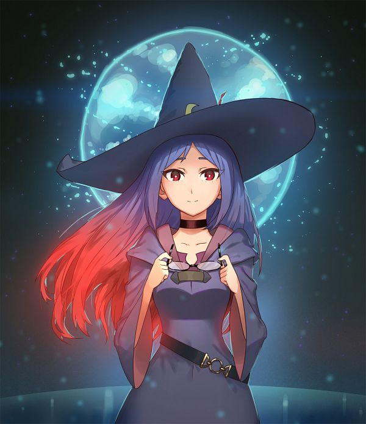

Información General
Ursula Callistis es una de las brujas más enigmáticas de *Little Witch Academia*. Es una profesora en la Academia Luna Nova que enseña a las estudiantes sobre la magia y la creatividad. Su personalidad tranquila y misteriosa la hace destacar entre los demás personajes.
Características
- Nombre: Ursula Callistis
- Edad: Desconocida (parece estar en sus 20s)
- Apariencia: Ursula tiene el cabello largo y azul, y suele llevar un vestido oscuro con un chal. Sus ojos son de un tono azul profundo, y su aspecto general transmite un aire de sabiduría y misterio.
- Habilidad mágica: Ursula es una poderosa bruja con una gran destreza en la magia de transformación y hechizos relacionados con la creatividad. Es conocida por su habilidad para inspirar a sus estudiantes.
- Personalidad: Ursula es amable y paciente, pero también tiene un lado serio y enigmático. Siempre está dispuesta a ayudar a sus estudiantes y a guiarlas en su viaje mágico.
Relaciones
Ursula tiene una relación especial con Akko, quien la ve como una mentora. A lo largo de la serie, ayuda a Akko a crecer y descubrir su verdadero potencial como bruja. También tiene una conexión con su alter ego, la famosa bruja conocida como "Shiny Chariot".